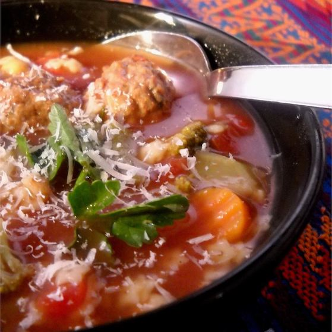

Hearty Italian Meatball Soup

Description:
A very hearty, flavorful soup. Use whatever small shaped pasta you like.
Ingredients:
- 3 cups water
- 2 (14 ounce) cans beef broth
- 1 teaspoon Italian seasoning
- 1 (16 ounce) package frozen cooked Italian-style meatballs
- cups frozen Italian-blend vegetables
- 1 cup small star-shaped dried pasta
- ¼ cup grated Parmesan cheese
Directions:
Step 1
- Stir water, tomatoes, beef broth, and Italian
seasoning together in a large pot; bring to a boil.
Step 2
- Add meatballs, Italian-blend vegetables, and pasta to the pot. Return broth to a boil, reduce heat to medium-low, and cook until
the meatballs are heated through and the pasta is tender, about 10 minutes
Step 3
- Ladle soup into bowls and garnish with Parmesan cheese.